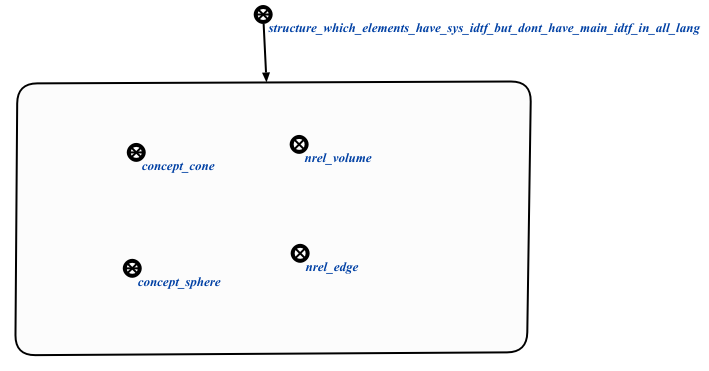

Команда проверки наличия sc-элементов, имеющих системный идентификатор, но не имеющих ни одного основного предназначена для проверки sc-элементов, на предмет наличия у них системного идентификатор, но отсутствия основного. Единственным аргументом запроса является нак структуры базы знаний, sc-элементы которой будут проверяться. Результатом выполнения команды является структура, содержащая sc-элементы без единого основного идентификатора. Пример результата выполнения команды представлен ниже:
